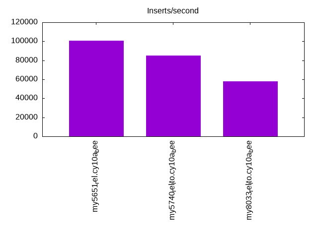
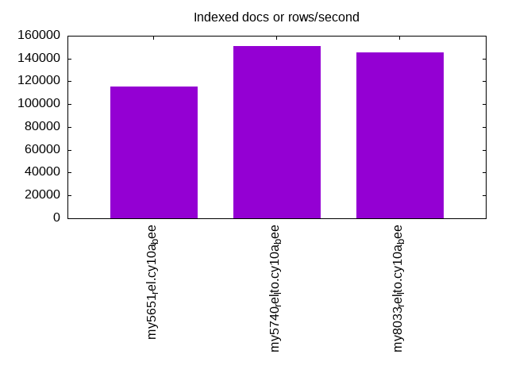
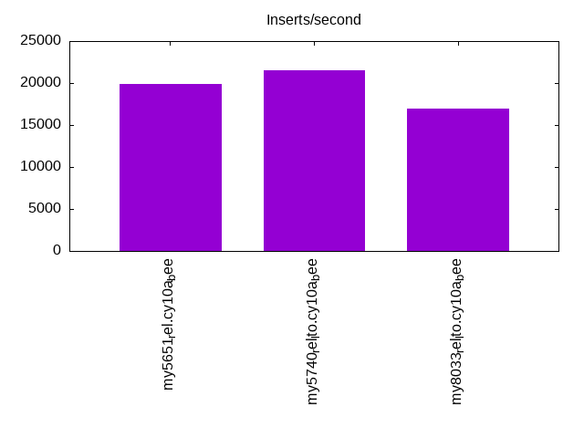
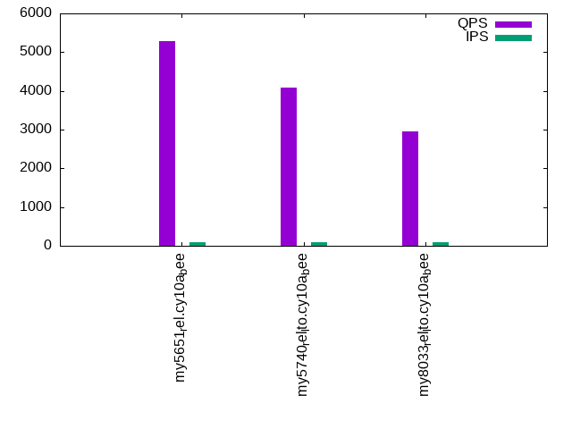
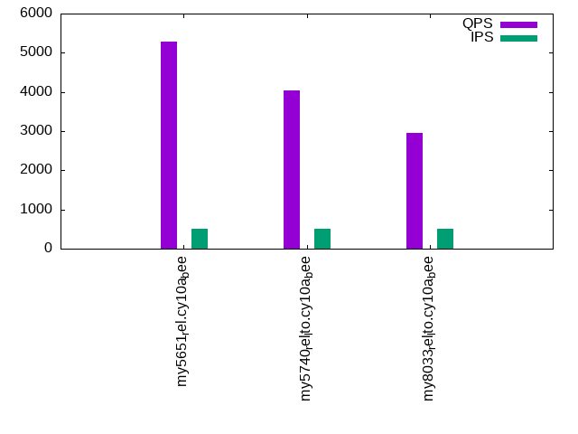
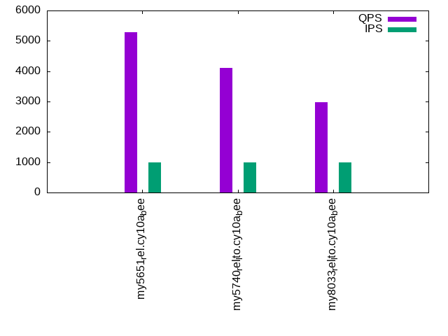

This is a report for the insert benchmark with 20M docs and 1 client(s). It is generated by scripts (bash, awk, sed) and Tufte might not be impressed. An overview of the insert benchmark is here and a short update is here. Below, by DBMS, I mean DBMS+version.config. An example is my8020.c10b40 where my means MySQL, 8020 is version 8.0.20 and c10b40 is the name for the configuration file.
The test server has 8 AMD cores, 16G RAM and an NVMe SSD. It is described here as the Beelink. The benchmark was run with 1 client and there were 1 or 3 connections per client (1 for queries or inserts without rate limits, 1+1 for rate limited inserts+deletes). There is 1 table. It loads 20M rows without secondary indexes, creates secondary indexes, then inserts 50M rows with a delete per insert to avoid growing the table. It then does 3 read+write tests for 3600s each that do queries as fast as possible with 100, 500 and then 1000 inserts/second/client concurrent with the queries and 1000 deletes/second to avoid growing the table. The database is (or should be) cached by InnoDB.
The tested DBMS are:
The numbers are inserts/s for l.i0 and l.i1, indexed docs (or rows) /s for l.x and queries/s for q100, q500, q1000. The values are the average rate over the entire test for inserts (IPS) and queries (QPS). The range of values for IPS and QPS is split into 3 parts: bottom 25%, middle 50%, top 25%. Values in the bottom 25% have a red background, values in the top 25% have a green background and values in the middle have no color. A gray background is used for values that can be ignored because the DBMS did not sustain the target insert rate. Red backgrounds are not used when the minimum value is within 80% of the max value.
| dbms | l.i0 | l.x | l.i1 | q100.1 | q500.1 | q1000.1 |
|---|---|---|---|---|---|---|
| my5651_rel.cy10a_bee | 100502 | 115517 | 19936 | 5290 | 5274 | 5292 |
| my5740_rel_lto.cy10a_bee | 85106 | 151128 | 21515 | 4093 | 4045 | 4108 |
| my8033_rel_lto.cy10a_bee | 58140 | 145652 | 16966 | 2953 | 2962 | 2983 |
This table has relative throughput, throughput for the DBMS relative to the DBMS in the first line, using the absolute throughput from the previous table. Values less than 0.95 have a yellow background. Values greater than 1.05 have a blue background.
| dbms | l.i0 | l.x | l.i1 | q100.1 | q500.1 | q1000.1 |
|---|---|---|---|---|---|---|
| my5651_rel.cy10a_bee | 1.00 | 1.00 | 1.00 | 1.00 | 1.00 | 1.00 |
| my5740_rel_lto.cy10a_bee | 0.85 | 1.31 | 1.08 | 0.77 | 0.77 | 0.78 |
| my8033_rel_lto.cy10a_bee | 0.58 | 1.26 | 0.85 | 0.56 | 0.56 | 0.56 |
This lists the average rate of inserts/s for the tests that do inserts concurrent with queries. For such tests the query rate is listed in the table above. The read+write tests are setup so that the insert rate should match the target rate every second. Cells that are not at least 95% of the target have a red background to indicate a failure to satisfy the target.
| dbms | q100.1 | q500.1 | q1000.1 |
|---|---|---|---|
| my5651_rel.cy10a_bee | 100 | 499 | 998 |
| my5740_rel_lto.cy10a_bee | 100 | 499 | 998 |
| my8033_rel_lto.cy10a_bee | 100 | 499 | 997 |
| target | 100 | 500 | 1000 |
l.i0: load without secondary indexes. Graphs for performance per 1-second interval are here.
Average throughput:
Insert response time histogram: each cell has the percentage of responses that take <= the time in the header and max is the max response time in seconds. For the max column values in the top 25% of the range have a red background and in the bottom 25% of the range have a green background. The red background is not used when the min value is within 80% of the max value.
| dbms | 256us | 1ms | 4ms | 16ms | 64ms | 256ms | 1s | 4s | 16s | gt | max |
|---|---|---|---|---|---|---|---|---|---|---|---|
| my5651_rel.cy10a_bee | 92.000 | 7.895 | 0.101 | 0.001 | 0.003 | 0.097 | |||||
| my5740_rel_lto.cy10a_bee | 5.303 | 94.348 | 0.204 | 0.143 | 0.003 | 0.103 | |||||
| my8033_rel_lto.cy10a_bee | 99.412 | 0.429 | 0.155 | 0.003 | 0.088 |
Performance metrics for the DBMS listed above. Some are normalized by throughput, others are not. Legend for results is here.
ips qps rps rmbps wps wmbps rpq rkbpq wpi wkbpi csps cpups cspq cpupq dbgb1 dbgb2 rss maxop p50 p99 tag 100502 0 879 3.4 52.8 22.9 0.009 0.035 0.001 0.233 11461 21.8 0.114 17 1.3 41.8 2.1 0.097 100890 82384 20m.my5651_rel.cy10a_bee 85106 0 0 0.0 134.2 21.6 0.000 0.000 0.002 0.259 8389 20.9 0.099 20 1.3 41.8 2.3 0.103 85636 48747 20m.my5740_rel_lto.cy10a_bee 58140 0 0 0.0 288.0 20.2 0.000 0.000 0.005 0.356 6745 20.3 0.116 28 1.3 9.9 2.5 0.088 58436 40395 20m.my8033_rel_lto.cy10a_bee
l.x: create secondary indexes.
Average throughput:
Performance metrics for the DBMS listed above. Some are normalized by throughput, others are not. Legend for results is here.
ips qps rps rmbps wps wmbps rpq rkbpq wpi wkbpi csps cpups cspq cpupq dbgb1 dbgb2 rss maxop p50 p99 tag 115517 0 19 0.1 1305.5 120.1 0.000 0.001 0.011 1.064 3912 11.6 0.034 8 2.7 43.2 3.5 0.016 NA NA 20m.my5651_rel.cy10a_bee 151128 0 0 0.0 1576.3 134.7 0.000 0.000 0.010 0.912 9030 12.4 0.060 7 3.0 43.5 3.7 0.021 NA NA 20m.my5740_rel_lto.cy10a_bee 145652 0 732 47.6 2494.5 147.1 0.005 0.335 0.017 1.034 10009 42.2 0.069 23 3.0 11.5 3.9 0.011 NA NA 20m.my8033_rel_lto.cy10a_bee
l.i1: continue load after secondary indexes created. Graphs for performance per 1-second interval are here.
Average throughput:
Insert response time histogram: each cell has the percentage of responses that take <= the time in the header and max is the max response time in seconds. For the max column values in the top 25% of the range have a red background and in the bottom 25% of the range have a green background. The red background is not used when the min value is within 80% of the max value.
| dbms | 256us | 1ms | 4ms | 16ms | 64ms | 256ms | 1s | 4s | 16s | gt | max |
|---|---|---|---|---|---|---|---|---|---|---|---|
| my5651_rel.cy10a_bee | 96.471 | 3.374 | 0.153 | 0.003 | 0.098 | ||||||
| my5740_rel_lto.cy10a_bee | 97.850 | 2.084 | 0.062 | 0.003 | 0.091 | ||||||
| my8033_rel_lto.cy10a_bee | 95.814 | 3.989 | 0.195 | 0.002 | 0.105 |
Delete response time histogram: each cell has the percentage of responses that take <= the time in the header and max is the max response time in seconds. For the max column values in the top 25% of the range have a red background and in the bottom 25% of the range have a green background. The red background is not used when the min value is within 80% of the max value.
| dbms | 256us | 1ms | 4ms | 16ms | 64ms | 256ms | 1s | 4s | 16s | gt | max |
|---|---|---|---|---|---|---|---|---|---|---|---|
| my5651_rel.cy10a_bee | 97.512 | 2.372 | 0.114 | 0.003 | 0.076 | ||||||
| my5740_rel_lto.cy10a_bee | 98.475 | 1.509 | 0.012 | 0.003 | 0.091 | ||||||
| my8033_rel_lto.cy10a_bee | 97.072 | 2.853 | 0.075 | 0.001 | 0.104 |
Performance metrics for the DBMS listed above. Some are normalized by throughput, others are not. Legend for results is here.
ips qps rps rmbps wps wmbps rpq rkbpq wpi wkbpi csps cpups cspq cpupq dbgb1 dbgb2 rss maxop p50 p99 tag 19936 0 670 2.6 980.1 54.7 0.034 0.134 0.049 2.809 14090 34.4 0.707 138 3.8 44.3 4.5 0.098 21276 4997 20m.my5651_rel.cy10a_bee 21515 0 0 0.0 1102.1 58.2 0.000 0.000 0.051 2.772 12216 37.8 0.568 141 4.4 45.0 5.5 0.091 22026 6143 20m.my5740_rel_lto.cy10a_bee 16966 0 31 0.5 3605.0 118.0 0.002 0.030 0.212 7.119 18949 36.3 1.117 171 4.3 13.1 5.6 0.105 17640 4345 20m.my8033_rel_lto.cy10a_bee
q100.1: range queries with 100 insert/s per client. Graphs for performance per 1-second interval are here.
Average throughput:
Query response time histogram: each cell has the percentage of responses that take <= the time in the header and max is the max response time in seconds. For max values in the top 25% of the range have a red background and in the bottom 25% of the range have a green background. The red background is not used when the min value is within 80% of the max value.
| dbms | 256us | 1ms | 4ms | 16ms | 64ms | 256ms | 1s | 4s | 16s | gt | max |
|---|---|---|---|---|---|---|---|---|---|---|---|
| my5651_rel.cy10a_bee | 94.942 | 5.052 | 0.002 | 0.003 | nonzero | 0.016 | |||||
| my5740_rel_lto.cy10a_bee | 70.073 | 29.927 | nonzero | nonzero | 0.005 | ||||||
| my8033_rel_lto.cy10a_bee | 17.846 | 82.153 | 0.001 | nonzero | 0.005 |
Insert response time histogram: each cell has the percentage of responses that take <= the time in the header and max is the max response time in seconds. For max values in the top 25% of the range have a red background and in the bottom 25% of the range have a green background. The red background is not used when the min value is within 80% of the max value.
| dbms | 256us | 1ms | 4ms | 16ms | 64ms | 256ms | 1s | 4s | 16s | gt | max |
|---|---|---|---|---|---|---|---|---|---|---|---|
| my5651_rel.cy10a_bee | 52.278 | 46.847 | 0.875 | 0.026 | |||||||
| my5740_rel_lto.cy10a_bee | 99.625 | 0.375 | 0.012 | ||||||||
| my8033_rel_lto.cy10a_bee | 99.417 | 0.569 | 0.014 | 0.017 |
Delete response time histogram: each cell has the percentage of responses that take <= the time in the header and max is the max response time in seconds. For max values in the top 25% of the range have a red background and in the bottom 25% of the range have a green background. The red background is not used when the min value is within 80% of the max value.
| dbms | 256us | 1ms | 4ms | 16ms | 64ms | 256ms | 1s | 4s | 16s | gt | max |
|---|---|---|---|---|---|---|---|---|---|---|---|
| my5651_rel.cy10a_bee | 53.806 | 45.819 | 0.375 | 0.024 | |||||||
| my5740_rel_lto.cy10a_bee | 99.639 | 0.361 | 0.013 | ||||||||
| my8033_rel_lto.cy10a_bee | 99.542 | 0.458 | 0.013 |
Performance metrics for the DBMS listed above. Some are normalized by throughput, others are not. Legend for results is here.
ips qps rps rmbps wps wmbps rpq rkbpq wpi wkbpi csps cpups cspq cpupq dbgb1 dbgb2 rss maxop p50 p99 tag 100 5290 4 0.0 692.0 20.8 0.001 0.003 6.941 213.223 22694 13.1 4.290 198 3.8 44.3 4.5 0.016 5243 5066 20m.my5651_rel.cy10a_bee 100 4093 0 0.0 19.8 0.6 0.000 0.000 0.199 6.362 15903 12.5 3.886 244 4.4 45.0 5.5 0.005 4046 3836 20m.my5740_rel_lto.cy10a_bee 100 2953 0 0.0 66.2 1.6 0.000 0.000 0.663 16.320 11905 12.5 4.032 339 4.3 13.1 5.7 0.005 2938 2812 20m.my8033_rel_lto.cy10a_bee
q500.1: range queries with 500 insert/s per client. Graphs for performance per 1-second interval are here.
Average throughput:
Query response time histogram: each cell has the percentage of responses that take <= the time in the header and max is the max response time in seconds. For max values in the top 25% of the range have a red background and in the bottom 25% of the range have a green background. The red background is not used when the min value is within 80% of the max value.
| dbms | 256us | 1ms | 4ms | 16ms | 64ms | 256ms | 1s | 4s | 16s | gt | max |
|---|---|---|---|---|---|---|---|---|---|---|---|
| my5651_rel.cy10a_bee | 94.872 | 5.123 | 0.002 | 0.003 | 0.010 | ||||||
| my5740_rel_lto.cy10a_bee | 69.074 | 30.926 | nonzero | nonzero | 0.005 | ||||||
| my8033_rel_lto.cy10a_bee | 18.029 | 81.970 | 0.001 | nonzero | 0.008 |
Insert response time histogram: each cell has the percentage of responses that take <= the time in the header and max is the max response time in seconds. For max values in the top 25% of the range have a red background and in the bottom 25% of the range have a green background. The red background is not used when the min value is within 80% of the max value.
| dbms | 256us | 1ms | 4ms | 16ms | 64ms | 256ms | 1s | 4s | 16s | gt | max |
|---|---|---|---|---|---|---|---|---|---|---|---|
| my5651_rel.cy10a_bee | 90.283 | 9.639 | 0.078 | 0.041 | |||||||
| my5740_rel_lto.cy10a_bee | 99.589 | 0.408 | 0.003 | 0.057 | |||||||
| my8033_rel_lto.cy10a_bee | 99.086 | 0.892 | 0.022 | 0.041 |
Delete response time histogram: each cell has the percentage of responses that take <= the time in the header and max is the max response time in seconds. For max values in the top 25% of the range have a red background and in the bottom 25% of the range have a green background. The red background is not used when the min value is within 80% of the max value.
| dbms | 256us | 1ms | 4ms | 16ms | 64ms | 256ms | 1s | 4s | 16s | gt | max |
|---|---|---|---|---|---|---|---|---|---|---|---|
| my5651_rel.cy10a_bee | 90.528 | 9.447 | 0.025 | 0.021 | |||||||
| my5740_rel_lto.cy10a_bee | 99.717 | 0.281 | 0.003 | 0.054 | |||||||
| my8033_rel_lto.cy10a_bee | 99.492 | 0.494 | 0.014 | 0.051 |
Performance metrics for the DBMS listed above. Some are normalized by throughput, others are not. Legend for results is here.
ips qps rps rmbps wps wmbps rpq rkbpq wpi wkbpi csps cpups cspq cpupq dbgb1 dbgb2 rss maxop p50 p99 tag 499 5274 17 0.1 49.3 1.9 0.003 0.013 0.099 3.985 20666 13.3 3.919 202 3.8 44.3 4.5 0.010 5229 5065 20m.my5651_rel.cy10a_bee 499 4045 0 0.0 22.2 1.1 0.000 0.000 0.044 2.216 15818 13.6 3.910 269 4.4 45.0 5.5 0.005 4011 3820 20m.my5740_rel_lto.cy10a_bee 499 2962 0 0.0 184.0 5.1 0.000 0.000 0.369 10.503 12411 13.5 4.190 365 4.3 13.1 5.7 0.008 2941 2798 20m.my8033_rel_lto.cy10a_bee
q1000.1: range queries with 1000 insert/s per client. Graphs for performance per 1-second interval are here.
Average throughput:
Query response time histogram: each cell has the percentage of responses that take <= the time in the header and max is the max response time in seconds. For max values in the top 25% of the range have a red background and in the bottom 25% of the range have a green background. The red background is not used when the min value is within 80% of the max value.
| dbms | 256us | 1ms | 4ms | 16ms | 64ms | 256ms | 1s | 4s | 16s | gt | max |
|---|---|---|---|---|---|---|---|---|---|---|---|
| my5651_rel.cy10a_bee | 94.613 | 5.381 | 0.003 | 0.003 | nonzero | 0.017 | |||||
| my5740_rel_lto.cy10a_bee | 70.407 | 29.592 | 0.001 | nonzero | 0.004 | ||||||
| my8033_rel_lto.cy10a_bee | 20.116 | 79.881 | 0.003 | nonzero | 0.008 |
Insert response time histogram: each cell has the percentage of responses that take <= the time in the header and max is the max response time in seconds. For max values in the top 25% of the range have a red background and in the bottom 25% of the range have a green background. The red background is not used when the min value is within 80% of the max value.
| dbms | 256us | 1ms | 4ms | 16ms | 64ms | 256ms | 1s | 4s | 16s | gt | max |
|---|---|---|---|---|---|---|---|---|---|---|---|
| my5651_rel.cy10a_bee | 92.889 | 7.017 | 0.094 | 0.041 | |||||||
| my5740_rel_lto.cy10a_bee | 99.599 | 0.399 | 0.003 | 0.049 | |||||||
| my8033_rel_lto.cy10a_bee | 97.456 | 2.518 | 0.026 | 0.053 |
Delete response time histogram: each cell has the percentage of responses that take <= the time in the header and max is the max response time in seconds. For max values in the top 25% of the range have a red background and in the bottom 25% of the range have a green background. The red background is not used when the min value is within 80% of the max value.
| dbms | 256us | 1ms | 4ms | 16ms | 64ms | 256ms | 1s | 4s | 16s | gt | max |
|---|---|---|---|---|---|---|---|---|---|---|---|
| my5651_rel.cy10a_bee | 93.389 | 6.569 | 0.042 | 0.022 | |||||||
| my5740_rel_lto.cy10a_bee | 99.717 | 0.281 | 0.003 | 0.048 | |||||||
| my8033_rel_lto.cy10a_bee | 99.340 | 0.642 | 0.018 | 0.050 |
Performance metrics for the DBMS listed above. Some are normalized by throughput, others are not. Legend for results is here.
ips qps rps rmbps wps wmbps rpq rkbpq wpi wkbpi csps cpups cspq cpupq dbgb1 dbgb2 rss maxop p50 p99 tag 998 5292 33 0.1 398.1 12.9 0.006 0.025 0.399 13.241 22110 14.5 4.178 219 3.8 44.3 4.5 0.017 5242 5051 20m.my5651_rel.cy10a_bee 998 4108 0 0.0 59.7 2.6 0.000 0.000 0.060 2.619 16366 14.5 3.984 282 4.4 45.0 5.5 0.004 4060 3851 20m.my5740_rel_lto.cy10a_bee 997 2983 0 0.0 382.7 10.7 0.000 0.000 0.384 11.027 13301 14.7 4.458 394 4.3 13.1 5.7 0.008 2959 2813 20m.my8033_rel_lto.cy10a_bee
l.i0: load without secondary indexes
Performance metrics for all DBMS, not just the ones listed above. Some are normalized by throughput, others are not. Legend for results is here.
ips qps rps rmbps wps wmbps rpq rkbpq wpi wkbpi csps cpups cspq cpupq dbgb1 dbgb2 rss maxop p50 p99 tag 100502 0 879 3.4 52.8 22.9 0.009 0.035 0.001 0.233 11461 21.8 0.114 17 1.3 41.8 2.1 0.097 100890 82384 20m.my5651_rel.cy10a_bee 85106 0 0 0.0 134.2 21.6 0.000 0.000 0.002 0.259 8389 20.9 0.099 20 1.3 41.8 2.3 0.103 85636 48747 20m.my5740_rel_lto.cy10a_bee 58140 0 0 0.0 288.0 20.2 0.000 0.000 0.005 0.356 6745 20.3 0.116 28 1.3 9.9 2.5 0.088 58436 40395 20m.my8033_rel_lto.cy10a_bee
l.x: create secondary indexes
Performance metrics for all DBMS, not just the ones listed above. Some are normalized by throughput, others are not. Legend for results is here.
ips qps rps rmbps wps wmbps rpq rkbpq wpi wkbpi csps cpups cspq cpupq dbgb1 dbgb2 rss maxop p50 p99 tag 115517 0 19 0.1 1305.5 120.1 0.000 0.001 0.011 1.064 3912 11.6 0.034 8 2.7 43.2 3.5 0.016 NA NA 20m.my5651_rel.cy10a_bee 151128 0 0 0.0 1576.3 134.7 0.000 0.000 0.010 0.912 9030 12.4 0.060 7 3.0 43.5 3.7 0.021 NA NA 20m.my5740_rel_lto.cy10a_bee 145652 0 732 47.6 2494.5 147.1 0.005 0.335 0.017 1.034 10009 42.2 0.069 23 3.0 11.5 3.9 0.011 NA NA 20m.my8033_rel_lto.cy10a_bee
l.i1: continue load after secondary indexes created
Performance metrics for all DBMS, not just the ones listed above. Some are normalized by throughput, others are not. Legend for results is here.
ips qps rps rmbps wps wmbps rpq rkbpq wpi wkbpi csps cpups cspq cpupq dbgb1 dbgb2 rss maxop p50 p99 tag 19936 0 670 2.6 980.1 54.7 0.034 0.134 0.049 2.809 14090 34.4 0.707 138 3.8 44.3 4.5 0.098 21276 4997 20m.my5651_rel.cy10a_bee 21515 0 0 0.0 1102.1 58.2 0.000 0.000 0.051 2.772 12216 37.8 0.568 141 4.4 45.0 5.5 0.091 22026 6143 20m.my5740_rel_lto.cy10a_bee 16966 0 31 0.5 3605.0 118.0 0.002 0.030 0.212 7.119 18949 36.3 1.117 171 4.3 13.1 5.6 0.105 17640 4345 20m.my8033_rel_lto.cy10a_bee
q100.1: range queries with 100 insert/s per client
Performance metrics for all DBMS, not just the ones listed above. Some are normalized by throughput, others are not. Legend for results is here.
ips qps rps rmbps wps wmbps rpq rkbpq wpi wkbpi csps cpups cspq cpupq dbgb1 dbgb2 rss maxop p50 p99 tag 100 5290 4 0.0 692.0 20.8 0.001 0.003 6.941 213.223 22694 13.1 4.290 198 3.8 44.3 4.5 0.016 5243 5066 20m.my5651_rel.cy10a_bee 100 4093 0 0.0 19.8 0.6 0.000 0.000 0.199 6.362 15903 12.5 3.886 244 4.4 45.0 5.5 0.005 4046 3836 20m.my5740_rel_lto.cy10a_bee 100 2953 0 0.0 66.2 1.6 0.000 0.000 0.663 16.320 11905 12.5 4.032 339 4.3 13.1 5.7 0.005 2938 2812 20m.my8033_rel_lto.cy10a_bee
q500.1: range queries with 500 insert/s per client
Performance metrics for all DBMS, not just the ones listed above. Some are normalized by throughput, others are not. Legend for results is here.
ips qps rps rmbps wps wmbps rpq rkbpq wpi wkbpi csps cpups cspq cpupq dbgb1 dbgb2 rss maxop p50 p99 tag 499 5274 17 0.1 49.3 1.9 0.003 0.013 0.099 3.985 20666 13.3 3.919 202 3.8 44.3 4.5 0.010 5229 5065 20m.my5651_rel.cy10a_bee 499 4045 0 0.0 22.2 1.1 0.000 0.000 0.044 2.216 15818 13.6 3.910 269 4.4 45.0 5.5 0.005 4011 3820 20m.my5740_rel_lto.cy10a_bee 499 2962 0 0.0 184.0 5.1 0.000 0.000 0.369 10.503 12411 13.5 4.190 365 4.3 13.1 5.7 0.008 2941 2798 20m.my8033_rel_lto.cy10a_bee
q1000.1: range queries with 1000 insert/s per client
Performance metrics for all DBMS, not just the ones listed above. Some are normalized by throughput, others are not. Legend for results is here.
ips qps rps rmbps wps wmbps rpq rkbpq wpi wkbpi csps cpups cspq cpupq dbgb1 dbgb2 rss maxop p50 p99 tag 998 5292 33 0.1 398.1 12.9 0.006 0.025 0.399 13.241 22110 14.5 4.178 219 3.8 44.3 4.5 0.017 5242 5051 20m.my5651_rel.cy10a_bee 998 4108 0 0.0 59.7 2.6 0.000 0.000 0.060 2.619 16366 14.5 3.984 282 4.4 45.0 5.5 0.004 4060 3851 20m.my5740_rel_lto.cy10a_bee 997 2983 0 0.0 382.7 10.7 0.000 0.000 0.384 11.027 13301 14.7 4.458 394 4.3 13.1 5.7 0.008 2959 2813 20m.my8033_rel_lto.cy10a_bee
Insert response time histogram
256us 1ms 4ms 16ms 64ms 256ms 1s 4s 16s gt max tag 0.000 92.000 7.895 0.101 0.001 0.003 0.000 0.000 0.000 0.000 0.097 my5651_rel.cy10a_bee 0.000 5.303 94.348 0.204 0.143 0.003 0.000 0.000 0.000 0.000 0.103 my5740_rel_lto.cy10a_bee 0.000 0.000 99.412 0.429 0.155 0.003 0.000 0.000 0.000 0.000 0.088 my8033_rel_lto.cy10a_bee
TODO - determine whether there is data for create index response time
Insert response time histogram
256us 1ms 4ms 16ms 64ms 256ms 1s 4s 16s gt max tag 0.000 0.000 96.471 3.374 0.153 0.003 0.000 0.000 0.000 0.000 0.098 my5651_rel.cy10a_bee 0.000 0.000 97.850 2.084 0.062 0.003 0.000 0.000 0.000 0.000 0.091 my5740_rel_lto.cy10a_bee 0.000 0.000 95.814 3.989 0.195 0.002 0.000 0.000 0.000 0.000 0.105 my8033_rel_lto.cy10a_bee
Delete response time histogram
256us 1ms 4ms 16ms 64ms 256ms 1s 4s 16s gt max tag 0.000 0.000 97.512 2.372 0.114 0.003 0.000 0.000 0.000 0.000 0.076 my5651_rel.cy10a_bee 0.000 0.000 98.475 1.509 0.012 0.003 0.000 0.000 0.000 0.000 0.091 my5740_rel_lto.cy10a_bee 0.000 0.000 97.072 2.853 0.075 0.001 0.000 0.000 0.000 0.000 0.104 my8033_rel_lto.cy10a_bee
Query response time histogram
256us 1ms 4ms 16ms 64ms 256ms 1s 4s 16s gt max tag 94.942 5.052 0.002 0.003 nonzero 0.000 0.000 0.000 0.000 0.000 0.016 my5651_rel.cy10a_bee 70.073 29.927 nonzero nonzero 0.000 0.000 0.000 0.000 0.000 0.000 0.005 my5740_rel_lto.cy10a_bee 17.846 82.153 0.001 nonzero 0.000 0.000 0.000 0.000 0.000 0.000 0.005 my8033_rel_lto.cy10a_bee
Insert response time histogram
256us 1ms 4ms 16ms 64ms 256ms 1s 4s 16s gt max tag 0.000 0.000 52.278 46.847 0.875 0.000 0.000 0.000 0.000 0.000 0.026 my5651_rel.cy10a_bee 0.000 0.000 99.625 0.375 0.000 0.000 0.000 0.000 0.000 0.000 0.012 my5740_rel_lto.cy10a_bee 0.000 0.000 99.417 0.569 0.014 0.000 0.000 0.000 0.000 0.000 0.017 my8033_rel_lto.cy10a_bee
Delete response time histogram
256us 1ms 4ms 16ms 64ms 256ms 1s 4s 16s gt max tag 0.000 0.000 53.806 45.819 0.375 0.000 0.000 0.000 0.000 0.000 0.024 my5651_rel.cy10a_bee 0.000 0.000 99.639 0.361 0.000 0.000 0.000 0.000 0.000 0.000 0.013 my5740_rel_lto.cy10a_bee 0.000 0.000 99.542 0.458 0.000 0.000 0.000 0.000 0.000 0.000 0.013 my8033_rel_lto.cy10a_bee
Query response time histogram
256us 1ms 4ms 16ms 64ms 256ms 1s 4s 16s gt max tag 94.872 5.123 0.002 0.003 0.000 0.000 0.000 0.000 0.000 0.000 0.010 my5651_rel.cy10a_bee 69.074 30.926 nonzero nonzero 0.000 0.000 0.000 0.000 0.000 0.000 0.005 my5740_rel_lto.cy10a_bee 18.029 81.970 0.001 nonzero 0.000 0.000 0.000 0.000 0.000 0.000 0.008 my8033_rel_lto.cy10a_bee
Insert response time histogram
256us 1ms 4ms 16ms 64ms 256ms 1s 4s 16s gt max tag 0.000 0.000 90.283 9.639 0.078 0.000 0.000 0.000 0.000 0.000 0.041 my5651_rel.cy10a_bee 0.000 0.000 99.589 0.408 0.003 0.000 0.000 0.000 0.000 0.000 0.057 my5740_rel_lto.cy10a_bee 0.000 0.000 99.086 0.892 0.022 0.000 0.000 0.000 0.000 0.000 0.041 my8033_rel_lto.cy10a_bee
Delete response time histogram
256us 1ms 4ms 16ms 64ms 256ms 1s 4s 16s gt max tag 0.000 0.000 90.528 9.447 0.025 0.000 0.000 0.000 0.000 0.000 0.021 my5651_rel.cy10a_bee 0.000 0.000 99.717 0.281 0.003 0.000 0.000 0.000 0.000 0.000 0.054 my5740_rel_lto.cy10a_bee 0.000 0.000 99.492 0.494 0.014 0.000 0.000 0.000 0.000 0.000 0.051 my8033_rel_lto.cy10a_bee
Query response time histogram
256us 1ms 4ms 16ms 64ms 256ms 1s 4s 16s gt max tag 94.613 5.381 0.003 0.003 nonzero 0.000 0.000 0.000 0.000 0.000 0.017 my5651_rel.cy10a_bee 70.407 29.592 0.001 nonzero 0.000 0.000 0.000 0.000 0.000 0.000 0.004 my5740_rel_lto.cy10a_bee 20.116 79.881 0.003 nonzero 0.000 0.000 0.000 0.000 0.000 0.000 0.008 my8033_rel_lto.cy10a_bee
Insert response time histogram
256us 1ms 4ms 16ms 64ms 256ms 1s 4s 16s gt max tag 0.000 0.000 92.889 7.017 0.094 0.000 0.000 0.000 0.000 0.000 0.041 my5651_rel.cy10a_bee 0.000 0.000 99.599 0.399 0.003 0.000 0.000 0.000 0.000 0.000 0.049 my5740_rel_lto.cy10a_bee 0.000 0.000 97.456 2.518 0.026 0.000 0.000 0.000 0.000 0.000 0.053 my8033_rel_lto.cy10a_bee
Delete response time histogram
256us 1ms 4ms 16ms 64ms 256ms 1s 4s 16s gt max tag 0.000 0.000 93.389 6.569 0.042 0.000 0.000 0.000 0.000 0.000 0.022 my5651_rel.cy10a_bee 0.000 0.000 99.717 0.281 0.003 0.000 0.000 0.000 0.000 0.000 0.048 my5740_rel_lto.cy10a_bee 0.000 0.000 99.340 0.642 0.018 0.000 0.000 0.000 0.000 0.000 0.050 my8033_rel_lto.cy10a_bee